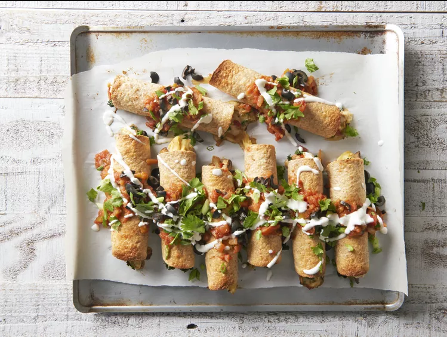

Breakfast Taquitos

Description
These breakfast taquitos are a great way to start you day with a tasty on the go meal option.
They do take some time to prepare, but freeze well and can be heated up in minutes!
Ingredients
- 4 teaspoons vegetable oil
- 2 cups chopped cremini mushrooms
- 3/4 cup chopped red bell pepper
- 1/3 cup chopped onion
- 2 cups chopped kale leaves
- 4 eggs, lightly beaten
- 4 egg whites, lightly beaten
- 1/2 cup shredded Monterey Jack cheese with jalapenos
- 4 ounce can of green chiles, undrained
- 8 6-inch whole wheat flour tortillas
- 1/4 cup salsa
Directions
- Preheat the oven to 425 degrees F (220 degrees C). Line a baking sheet with parchment paper.
- Heat 1 teaspoon oil in a large nonstick skillet over medium heat.
- Add mushrooms, bell pepper, and onion; cook until tender, stirring occasionally, about 4 minutes.
- Add kale cook and stir until wilted, around 1 minute. Remove vegetables from skillet.
- Add eggs and egg whites to the skillet over medium heat, without stirring, until mixture begins to set on the bottom and around the edges.
- Flip eggs over so that it can cook thouroughly until eggs are glossy and moist for around 2 to 3 minutes.
- Add vegetables back in with the cheese and chiles; stir gently to combine.
- Fill each tortiall with about 1/3 cup filling; roll up as light as possible.
- Arrange taquitos seam side down on the prepared baking sheet leaving space in between and brush with the remaining oil.
- Bake in preheated oven until evenly browned and crispy, about 15 minutes.
- Serve with salsa and/or whatever toppings.
More Recipes:
Return Home